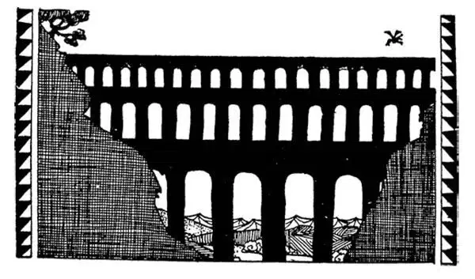

33
The New Champion of the World
新的世界冠军

YOU can well imagine how proud all the Romans now were that they were Romans, for Rome was the champion fighter of the world. If a man could toss his head and say, “I am a Roman citizen,” people were always ready to do something for him, afraid to do him any harm, afraid what might happen to them if they did. Rome was ruler not only of Italy but of Spain and North Africa. Like other earlier nations, once Rome had started conquering, it kept on conquering, until by 100 B.C. Rome was ruler of almost all the countries bordering the Mediterranean Sea—all except Egypt.
The New Champion of the World, who was to be champion for a great many years, was very businesslike and practical.
The Greeks loved beautiful things, beautiful buildings, beautiful sculpture, beautiful poems. The Romans copied the Greeks and learned from them how to make many beautiful things, but the Romans were most interested in practical and useful things. For example, now that the Romans ruled the world, they had to be able to send messengers and armies easily and quickly in every direction to the end of the empire and back again. It was necessary to have roads, for of course there were no railroads then. Now, an ordinary road made by simply clearing away the ground gets full of deep ruts and in rainy weather becomes so muddy that it can hardly be used at all.
Rome set to work and built roads. These roads were like paved streets. Large rocks were placed at the bottom for a foundation, smaller stones placed on top, and large, flat paving-stones laid over all. Thousands of miles of such roads were built to all parts of the empire. One could go from almost anywhere all the way to Rome on paved roads. We still have an expression, “All roads lead to Rome.” So well were these roads made that many of them still exist today, two thousand years after they were built.
The Romans also showed their practical minds by making two very important city improvements. If you live in a city, you turn on a spigot and you get plenty of pure water whenever you want it. The people in cities at that time, however, usually had to get their water both for drinking and for washing from wells or springs nearby. These springs and wells often became dirty and made the people very sick. Every once in a while because of such dirty water there were those terrible plagues, those terribly contagious diseases like the one I told you about in Athens when people died faster than they could be buried.

Roman aqueduct （罗马高架渠）
The Romans wanted pure water, so they set to work to find lakes from which they could get pure water. As oftentimes these lakes were many miles away from the city, they then built big pipes to carry the water all the way to the city. Such a pipe was not made of iron or terra-cotta as nowadays, but of stone and concrete, and was called an aqueduct , which in Latin means water-carrier . If this aqueduct had to cross a river or a valley, they built a bridge to hold it up. Many of these Roman aqueducts are still standing and in use today.
Now, up to this time waste water, after it had been used, and also every other kind of dirt and refuse, was simply dumped into the street. This naturally made the city or town filthy and unhealthy and was another cause of plagues.
The Romans, however, built great underground sewers to carry off this dirt and waste water and empty it into the river or into some other place where they thought it would do no harm and cause no sickness. Now we know that it's not good to dump sewage into rivers because they can become polluted. Then if people drink that water, they'll get sick. The Romans knew that they had to get the sewage off the city streets, but they didn't know how to avoid polluting their rivers. Nowadays, every large city has aqueducts and sewers as a matter of course, but the Romans were the first Europeans to build them on a large scale.
One of the most important things that Rome did was to make rules that everyone had to obey; laws, we call them. Many of these laws were so fair and just that some of our own laws today are copied from them.
All the cities and towns of the Roman Empire had to pay money or taxes to Rome. Rome therefore became a very wealthy city. Millions of this money, which was brought to her, was spent in putting up beautiful buildings in the city, temples to the gods, splendid palaces for the rulers, public baths, and huge open-air places called amphitheaters where the people could be amused.
The amphitheaters were something like our football and baseball fields or stadiums. They did not have football or baseball, however. They had chariot races, and deadly fights between men, or between men and animals. Chariots were small carts with large wheels drawn by two or by four horses and driven by a man standing up. Perhaps you have seen chariot races in the circus.
The sport that the Romans enjoyed most of all was a fight of gladiators. Gladiators were very strong and powerful men who had been captured in battle by the Romans. They were made to fight with one another or with wild animals for the amusement of the crowds. These gladiatorial fights were very cruel, but the Romans enjoyed seeing blood shed. They liked to see one man kill another or a wild animal. It was so amusing. The movies would not have interested them half as much. Usually the gladiators fought until one or the other was killed, for the people were not, as a rule, satisfied until this was done.
Sometimes, however, if a gladiator, who had been knocked out, had shown himself particularly brave and a good fighter or a good sport, the people seated all around the amphitheater would turn their thumbs up as a sign that his life was to be spared by the other gladiator. The winning gladiator, before killing his opponent whom he had down, would wait to see what the people wished. If they turned their thumbs down , it meant he was to finish the fight by killing his man.
Although Rome had become such a fine and beautiful and healthy city in which to live, the rich people were getting most of the money that came there from all over the empire. They were getting richer and richer all the time, while the poor people, who got nothing, were getting poorer and poorer all the time. The Romans brought the people they conquered in battle to Rome and made them work for them without pay. These were slaves and they did all the work. It is said that there were more than twice as many slaves as Romans—two slaves for every Roman citizen.
Now, Scipio, who had conquered Hannibal in the Punic War, had a daughter named Cornelia Graccha, and she had two sons. They were very fine boys, and Cornelia was naturally very proud of them.
One day a very rich Roman woman was visiting Cornelia and showing off all her rings and necklaces and other ornaments, of which she had a great many and was very proud.
When she had shown off all she had, she asked to see Cornelia's jewels.
Cornelia called to her two boys, who were playing outside, and when they came in to their mother she put her arms around them and said:
“These are my jewels .”
But boys who are jewels when they are young do not always turn out to be jewels when they grow up. You may wonder how Cornelia's jewels turned out.
When they grew up, the Gracchi, as they were called, saw such great extravagance among the rich and such great misery among the poor that they wanted to do something about it. They saw that the poor had hardly anything to eat and no place to live. This did not seem fair. They tried to lower the price of food, so that the poor might be able to buy enough to eat. They tried to find some way to give the poor at least a small piece of land where they might raise a few vegetables. They were partly successful in bringing this about. But the rich people didn't like giving up anything to the poor, and they killed one of the Gracchus brothers, and later they killed the other one, also. These were Cornelia's jewels.
【中文阅读】
你可以很容易就想象得到所有的罗马人为自己“是”罗马人而感到怎样的自豪，因为罗马是世界上的新“拳王”。如果一个人把头一甩说，“我是罗马公民，”人们就随时想巴结他，却丝毫不敢伤害他，担心万一得罪了他，不知会有什么后果。罗马不仅统治着意大利，还掌控了西班牙和北非。如同其他早期的民族一样，一旦罗马成为征服者，它就会继续扩张，到公元前100年，罗马已经是地中海沿岸所有国家的统治者——除了埃及。
罗马这个新的世界霸主，将在以后很多年要维持霸主的地位，所以做事非常认真、注重实效。
凡是美的东西希腊人都喜爱，美的建筑、美的雕塑、美的诗歌。罗马人模仿希腊人，从他们那里学会了怎样创造出很多美的东西，但是他们最感兴趣的还是那些切合实际而又有用的东西。比如说，既然罗马人统治着世界，他们就必须能够迅捷地朝任何一个方向派出使者和军队，到达帝国最边远的地方，再从那儿返回。所以必须要有路，因为，当然了，那时还没有铁路。当时只不过把地面的障碍物清除掉，就形成了一般的道路，而这种道路到处留有很深的车辙，到了雨天就变得非常泥泞，根本没法走。
罗马开始认真修路了。这些道路很像一层层铺起来的马路。他们把大石头放在最下面作为地基，稍小一些的石头铺在大石头上，大块而平整的铺路石放在最上面。几千英里长的这种马路通向整个帝国的各个区域，人们几乎可以由各个不同的地方，通过这种铺好的道路到达罗马。我们现在还有个说法：“条条大路通罗马。”这些路修建得很坚固，它们建成后已过了两千年，其中许多道路现在还保留着。
罗马人也对城市做了两项重大的改善而显示出务实的精神。如果你住在城市里，任何时候想用水，只要打开水龙头，就可以得到很多干净的水。但是，在那个时代，城里的居民要饮水和用水通常只能到附近的水井或山泉那里去取水。这些山泉和水井经常受污染，人喝了脏水就会生病。间或，因为人们饮用这样污浊的水，引发了可怕的瘟疫，就是那种传染性极强的病，像我给讲过的发生在雅典的那场瘟疫一样，当时死的人太多，一时都来不及下葬。
罗马人想要干净的水，于是就开始一心寻找有干净水的湖泊，以便取用。因为这些湖泊常在离城市很多英里以外的地方，于是，他们建了一些巨大的管道将水从远处一直引到城里。这种管道可不像如今的管道那样由铁或陶制成，而是由石头和水泥制成，被称为“高架渠”，这个词拉丁语原意为“输水管道”。如果高架渠必须越过河流或山谷，他们就建一座桥把它托起来。许多罗马时期的高架渠至今还矗立在那里，而且还在使用。
直到这个时期，用过的废水和各种污物、垃圾，都直接倾倒在街道上了事。这自然就让城镇污秽不堪、很不卫生，也是引起瘟疫的另一个原因。
但是，罗马人建了庞大的地下下水道，让这些垃圾和废水流走，排放到河里或其他他们认为不会带来危害、引起疾病的地方。现在我们知道把污物倒入河里是不对的，因为河水会被污染。然后，人如果喝了受污染的河水，就会生病。当时的罗马人只知道让废水远离城市街道，却不知道如何避免废水污染河流。现在，每个大城市理所当然都有导水管和下水道了，但是，在欧洲，最先大规模建造它们的是罗马人。
罗马做的最重要的事情之一就是制定人人都必须遵守的规则，我们现在把这些规则称为法律，其中有很多是非常公正合理的，以至于我们今天的法律其中有些还是仿效它们制定的。
罗马帝国的所有城镇都必须向罗马交钱或交税，罗马因此而成了极富有的城市。那些奉送给罗马的无数钱财被用来兴建城市里华美的建筑物和神庙、统治者住的辉煌宫殿、公共浴室和叫做“竞技场”的大型圆形露天场所，供人们在那儿娱乐。
竞技场有点像我们的橄榄球场和棒球场，或者露天体育场。但是，他们并没有橄榄球或棒球。他们有双轮马车比赛，还有一项比赛是人与人之间或人与兽之间的殊死肉搏。双轮马车是一种小型马车，轮子很大，被两匹或四匹马拉着，由一个人站着驾驭。可能你们在马戏团里看过双轮马车比赛。
在所有竞技运动中，罗马人最喜欢的要数角斗士的格斗。角斗士都是体格强壮有力的男人，他们是在战争中被罗马人俘虏过来的。他们被迫互相格斗，或者和野兽搏斗，以娱乐在场的大量观众。这些角斗士的格斗非常残忍，但是罗马人喜欢看血淋淋的场面。他们喜欢看到一个角斗士杀死另一个角斗士或是杀死一只野兽，这是最令他们开心的，即使让他们看电影，他们也会觉得不如看角斗士格斗那样让人过瘾呢。通常，角斗士之间的格斗都是以其中一方被杀作为结束，照例人们不看到最后的场面是不会满意的。
不过，有时候，虽然一个角斗士已经被击倒，但是他在格斗中显得勇猛无畏， 训练有素，豁然大度，那么坐在圆形竞技场里的观众就会“向上竖起”大拇指，表示他们希望另一个角斗士饶他一命。获胜的角斗士，并不马上杀死倒在地上的对手，而是等着看观众有什么反应。如果他们把大拇指“朝下指”，这就意味着他必须杀掉对手，结束这场格斗。
尽管罗马已经成为一座人们居住的优雅、美丽而又卫生的城市，但是，来自帝国各地的大部分财富却源源不断地落到富人手中。他们变得越来越富有，穷人却一无所获，变得越来越贫穷。罗马人把战场上抓到的俘虏带到罗马，迫使这些人无偿为他们劳动。这些人就是奴隶，所有的活都是他们做。据说，奴隶的数量是罗马人的两倍还多——每个罗马人有两个奴隶为他服务。
在“布匿战争”中征服了汉尼拔的西庇阿，有个女儿叫科妮莉亚•格拉恰，她有两个儿子，都是非常优秀的孩子，科妮莉亚自然为有这样的儿子感到骄傲。
一天，一个非常富有的罗马妇女拜访科妮莉亚，向她炫耀自己所有的戒指、项链和其他的珠宝首饰，这样的珠宝她有好多好多，所以非常得意。
炫耀完她所有的珠宝，她说想看看科妮莉亚的珠宝。
科妮莉亚朝正在外面玩的两个儿子呼唤了一声，他们进屋来到母亲跟前，她用胳膊搂住了他俩，说：
“他们就是我的宝贝。”
但是，孩子小时候是父母的宝贝，等他们长大了可就不见得还是受人珍视的宝贝了。你们可能很想知道科妮莉亚的“宝贝”后来怎么样了。
长大后，他们被人称为格拉古兄弟，他们眼看着富人的生活极尽奢华，而穷人却困苦不堪，所以他们想做点什么来改变这种状况。他们看到穷人几乎没有东西吃，没有地方住，这显得很不公平。他们努力去降低食物价格，好让穷人能买得起足以吃饱的食物。他们还想方设法让穷人至少可以分到一小块土地，这样他们可以种点蔬菜。他们的努力在某些方面取得来了成功。但是富人不想分给穷人任何好处，因此他们谋杀了其中一个兄弟，后来把另一个也害死了。这就是科妮莉亚的宝贝长大后的命运。